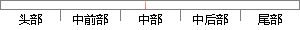

在此基础上，redis支持各种不同方式的排序。
片段位置图

相似结果|
相似片段 1：，redis支持各种不同方式的排序。与 memcached一样，为了保证效率，数据都是缓存在内存中。区别的是 redis会周期性的把更新的数据写入磁盘或者把修改操作写入追加的记录文件，并且在此基础上实现
相似片段 2： t～有序集合)和hash(哈希类型)。这些数据类型都支持push／pop、add／remove及取交集并集和差集及更丰富的操作，而且这些操作都是原子性的。在此基础上，redis支持各种不同方式的排序
相似片段 3：Hash(哈希类型)。这些数据类型都支持push／pop、add／remove及取交集并集和差集及更丰富的操作，而且这些操作都是原子性的。在此基础上，Redis支持各种不同方式的排序。与Memcached
相似片段 4：数据类型都支持push／pop、add／remove及取交集并集和差集及更丰富的操作，而且这些操作都是原子性的。在此基础上，redis支持各种不同方式的排序。与memcached一样，为了保证效率，数据
相似片段 5：、add／remove及取交集并集和差集及更丰富的操作，而且这些操作都是原子性的。在此基础上，redis支持各种不同方式的排序。与memcached一样，为了保证效率，数据都是缓存在内存中。区别的
相似片段 6：、add／remove及取交集并集和差集及更丰富的操作，而且这些操作都是原子性的。在此基础上，redis支持各种不同方式的排序。与Memcached一样，为了保证效率，数据都是缓存在内存中。区别的
相似片段 7：这些数据类型都支持push/pop、add/remove及取交集并集和差集及更丰富的操作，而且这些操作都是原子性的。在此基础上，redis支持各种不同方式的排序。与memcached一样，为了保证
相似片段 8：都是原子性的。在此基础上，Redis还支持各种不同方式的排序124J。(2)支持持久化Redis数据库中所用的数据都存储在内存中，由于内存的读写速度远快于硬盘，因此Redis的性能相对于其他基于硬盘
相似片段 9：有序集合)和Hashs(哈希)。这些数据类型，都已经支持add／remove、push／pop以及取交集、并集和差集；并且这些操作都是原子性的；在此基础上，Redis支持各种不同方式的排序方式[13
相似片段 10：磁盘中，或者将每个命令都添加至日志中，而且这些操作都是原子性的。在此基础上，Redis支持各种不同方式的排序。在平台开发中大量使用了Redis缓存用户的各种信息和平台列表查询信息。Redis有如下特点
|
※ 片段修改建议 ※
近似词参考：- 支持：撑持 支撑
- 各种：各类 种种
- 不同：分歧 差别
- 方式：体例 体式格局 方法
系统自动生成语句：在此基础上，redis撑持各类分歧体例的排序。
注：本片段修改建议为系统自动生成，仅供参考。